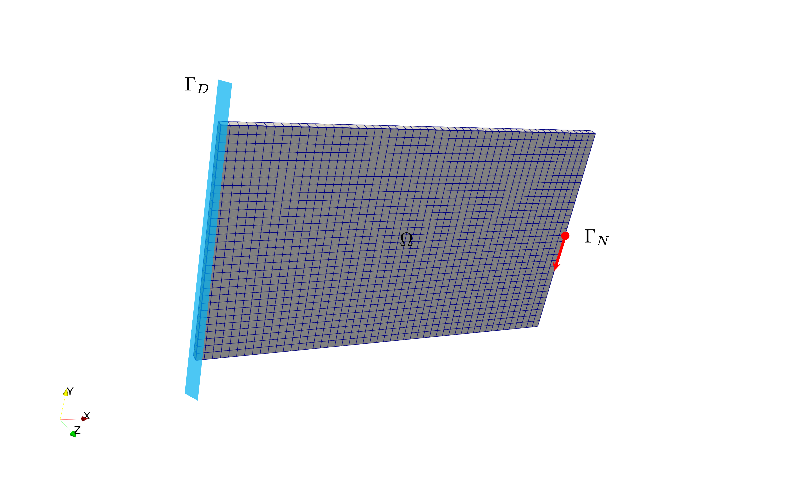
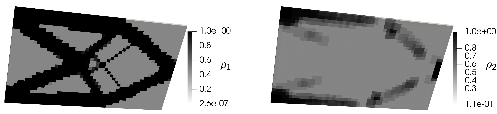
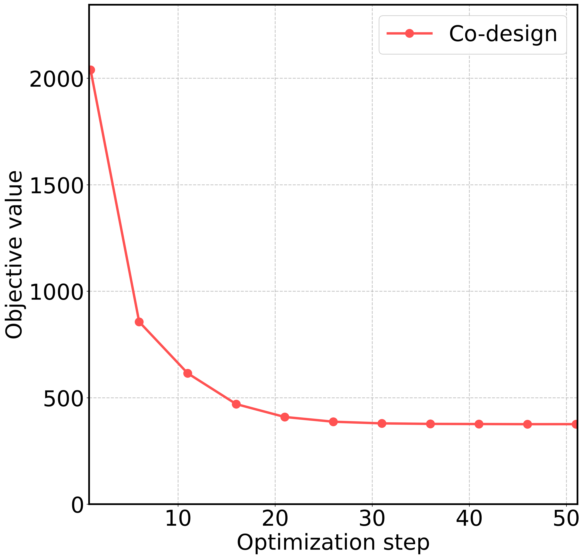
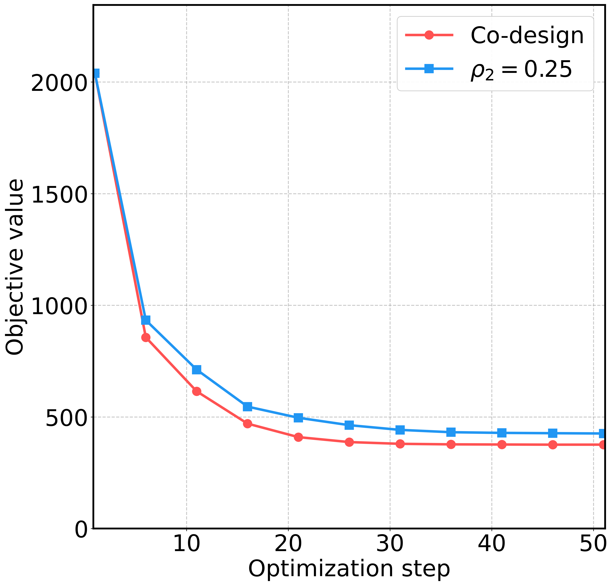

Structure/material co-design#
Problem definition#
In this example, we consider a co-design problem of structure and material based on a J2-plasticity model. The objective function in this problem is the compliance of the structure. The design variables are the two virtual densities \(\boldsymbol{\rho}_1\) and \(\boldsymbol{\rho}_2\), which decides the Young’s modulus (structure) and yield stress (material) of the cells in the finite element mesh. Since we will solve a J2-plasticity problem, we need to consider variables such as strain \(\boldsymbol{\varepsilon}^{n-1}\), stress \(\boldsymbol{\sigma}^{n-1}\), the value of yield function \(f_{\text{yield}}^{n-1}\) and value of the Neumann boundary condition \(\boldsymbol{t}^n\) following the loading steps in the forward problem.
The target of this tutorial is to use JAX-FEM to automatically find the gradient of the objective function with respect to the design variables \(\boldsymbol{\rho}_1\) and \(\boldsymbol{\rho}_2\).
Similar to the plasticity example, we assume that the total strain \(\boldsymbol{\varepsilon}^{n-1}\) and stress \(\boldsymbol{\sigma}^{n-1}\) from the previous loading step are known, and the problem states that find the displacement field \(\boldsymbol{u}^n\) at the current loading step such that
The stress \(\boldsymbol{\sigma}^n\) is defined with the following relationships:
where \(\boldsymbol{\sigma}_{\text{trial}}\) is the elastic trial stress, \(\boldsymbol{s}\) is the deviatoric part of \(\boldsymbol{\sigma}_{\text{trial}}\), \(f_{\text{yield}}^{n}\) is the yield function, \(\sigma_{\text{yield}}\) is the yield strength, and \(\boldsymbol{\sigma}^n\) is the stress at the current loading step.
Domain and boundary conditions#
\(\Omega = (0,50) \times (0,30) \times (0,1)\)
\(\Gamma_D = \{(0, x_2, x_3) \subset \partial \Omega\}\) (Dirichlet boundary)
\(\Gamma_N = \{(50, 15, x_3) \subset \partial \Omega\}\) (Neumann boundary with varing traction \(\boldsymbol{t}^n\))
In this example, we consider a traction-controlled loading condition. We assume quasi-static loadings from 0.2 to 1 on the Neumann boundary.

Boundary conditions.
Weak form#
The weak form gives
Optimization problem#
The topology optimization problem subject to the PDE constraint and two volume constraints:
It should be noted that \(n=1,2,...,N\), and there are \(N\) quasi-static loading steps that gradually increase the loading amount. The objective function depends on the compliance at the final step \(N\). You don’t have to worry about the accumulated effects on taking the derivative, since JAX-FEM will take care of that.
Implementation#
For the implementation, we first import some necessary modules.
[6]:
import numpy as onp
import jax
import jax.numpy as np
import os
import glob
import logging
from jax_fem.problem import Problem
from jax_fem.generate_mesh import Mesh, box_mesh_gmsh, get_meshio_cell_type
from jax_fem.solver import ad_wrapper
from jax_fem.utils import save_sol
from jax_fem.mma import optimize
from jax_fem import logger
logger.setLevel(logging.INFO)
os.environ["CUDA_VISIBLE_DEVICES"] = "0"
Weak form#
In the method custom_init, we mark all cells as design-dependent for optimization by setting flex_inds as the number of cells.
[ ]:
class Plasticity(Problem):
def custom_init(self):
self.fe = self.fes[0]
self.fe.flex_inds = np.arange(len(self.fe.cells))
A traction force on the surface (Y-direction), which is the Neumann boundary condition, is defined with the method get_surface_maps. The value of the traction force \(\boldsymbol{t}^n\) in each loading step is passed into the method as the third argument of the function surface_map.
[ ]:
def get_surface_maps(self):
def surface_map(u, x, load_value):
return np.array([0., load_value, 0.])
return [surface_map]
We define a function get_maps to realize the computation of strain \(\boldsymbol{\varepsilon}^n\), stress \(\boldsymbol{\sigma}^n\) and yield function \(f_{\text{yield}}^{n}\). Readers can refer to the plasticity example for more details. The difference here between this and the previous example is that the Young’s modulus and the yield stress of the material are depended on the virtual densities
\(\boldsymbol{\rho}_1\) and \(\boldsymbol{\rho}_2\) respectively.
[ ]:
def get_tensor_map(self):
_, stress_return_map, _ = self.get_maps()
return stress_return_map
def get_maps(self):
def safe_sqrt(x):
safe_x = np.where(x > 0., np.sqrt(x), 0.)
return safe_x
def safe_divide(x, y):
return np.where(y == 0., 0., x/y)
def strain(u_grad):
epsilon = 0.5*(u_grad + u_grad.T)
return epsilon
def stress(epsilon, E):
nu = 0.3
mu = E/(2.*(1. + nu))
lmbda = E*nu/((1+nu)*(1-2*nu))
sigma = lmbda*np.trace(epsilon)*np.eye(self.dim) + 2*mu*epsilon
return sigma
def stress_return_map_helper(u_grad, sigma_old, epsilon_old, f_yield_old, theta):
theta1, theta2 = theta
Emax = 70.e3
Emin = 70.
penal = 3.
E = Emin + (Emax - Emin)*theta1**penal
sig0 = 250. + theta2*100
epsilon_crt = strain(u_grad)
epsilon_inc = epsilon_crt - epsilon_old
sigma_trial = stress(epsilon_inc, E) + sigma_old
s_dev = sigma_trial - 1./self.dim*np.trace(sigma_trial)*np.eye(self.dim)
s_norm = safe_sqrt(3./2.*np.sum(s_dev*s_dev))
f_yield = s_norm - sig0
f_yield_plus = np.where(f_yield > 0., f_yield, 0.)
sigma = sigma_trial - safe_divide(f_yield_plus*s_dev, s_norm)
return sigma, f_yield
def stress_return_map(*args):
return stress_return_map_helper(*args)[0]
def f_yield_fn(*args):
return stress_return_map_helper(*args)[1]
return strain, stress_return_map, f_yield_fn
Function stress_strain_fns vectorizes the computation of \(f_{\text{yield}}^{n}\), \(\boldsymbol{\sigma}^n\) and \(\boldsymbol{\varepsilon}^n\) with jax.vmap. It will be called in function update_stress_strain.
[ ]:
def stress_strain_fns(self):
strain, stress_return_map, f_yield_fn = self.get_maps()
vmap_strain = jax.vmap(jax.vmap(strain))
vmap_stress_return_map = jax.vmap(jax.vmap(stress_return_map))
vmap_f_yield_fn = jax.vmap(jax.vmap(f_yield_fn))
return vmap_strain, vmap_stress_return_map, vmap_f_yield_fn
def update_stress_strain(self, sol, params):
u_grads = self.fe.sol_to_grad(sol)
vmap_strain, vmap_stress_rm, vmap_f_yield_fn = self.stress_strain_fns()
sigmas_old, epsilons_old, f_yield_old, thetas = params
sigmas_update = vmap_stress_rm(u_grads, sigmas_old, epsilons_old, f_yield_old, thetas)
epsilons_update = vmap_strain(u_grads)
f_yield_update = vmap_f_yield_fn(u_grads, sigmas_old, epsilons_old, f_yield_old, thetas)
return sigmas_update, epsilons_update, f_yield_update, thetas
The set_params method updates the internal variables (internal_vars) and the value of the Neumann boundary condition (internal_vars_surfaces). The internal variables here include \(\boldsymbol{\sigma}^{n-1}\), \(\boldsymbol{\varepsilon}^{n-1}\), \(f_{\text{yield}}^{n-1}\) and \(\boldsymbol{\rho}\) (\(\boldsymbol{\rho}_1\) and \(\boldsymbol{\rho}_2\)).
[ ]:
def set_params(self, params):
body_params, surface_params = params
self.internal_vars = body_params
# Generally, [[surface1_params1, surface1_params2, ...], [surface2_params1, surface2_params2, ...], ...]
self.internal_vars_surfaces = [[surface_params]]
Function init_params initializes the arrays for \(\boldsymbol{\sigma}^{n-1}\), \(\boldsymbol{\varepsilon}^{n-1}\), \(f_{\text{yield}}^{n-1}\) and \(\boldsymbol{\rho}\) .
[ ]:
def init_params(self, theta):
epsilons_old = onp.zeros((len(self.fe.cells), self.fe.num_quads, self.fe.vec, self.dim))
sigmas_old = onp.zeros_like(epsilons_old)
f_yield_old = onp.zeros((len(self.fe.cells), self.fe.num_quads))
full_params = np.ones((self.num_cells, theta.shape[1]))
full_params = full_params.at[self.fe.flex_inds].set(theta)
thetas = np.repeat(full_params[:, None, :], self.fe.num_quads, axis=1)
self.full_params = full_params
return sigmas_old, epsilons_old, f_yield_old, thetas
Function inspect is defined for outputing the yield function values for debuggging.
[ ]:
def inspect(self):
f_yield_old = self.internal_vars[2]
return np.mean(f_yield_old, axis=1)
A function compute_compliance is defined to compute the compliance which will be set as the objective function in this optimization problem.
[ ]:
def compute_compliance(self, load_value, sol):
# Surface integral
boundary_inds = self.boundary_inds_list[0]
_, nanson_scale = self.fe.get_face_shape_grads(boundary_inds)
# (num_selected_faces, 1, num_nodes, vec) * # (num_selected_faces, num_face_quads, num_nodes, 1)
u_face = sol[self.fe.cells][boundary_inds[:, 0]][:, None, :, :] * self.fe.face_shape_vals[boundary_inds[:, 1]][:, :, :, None]
u_face = np.sum(u_face, axis=2) # (num_selected_faces, num_face_quads, vec)
# (num_cells, num_faces, num_face_quads, dim) -> (num_selected_faces, num_face_quads, dim)
subset_quad_points = self.physical_surface_quad_points[0]
surface_params = load_value*np.ones((subset_quad_points.shape[0], self.fe.num_face_quads))
neumann_fn = self.get_surface_maps()[0]
traction = -jax.vmap(jax.vmap(neumann_fn))(u_face, subset_quad_points, surface_params) # (num_selected_faces, num_face_quads, vec)
val = np.sum(traction * u_face * nanson_scale[:, :, None])
return val
Mesh#
Here we use the first-order hexahedron element HEX8 to discretize the computational domain:
[ ]:
output_path = os.getcwd()
## output_path = os.path.join(os.path.dirname(__file__), 'output')
files = glob.glob(os.path.join(output_path, f'vtk/*'))
for f in files:
os.remove(f)
ele_type = 'HEX8'
cell_type = get_meshio_cell_type(ele_type)
meshio_mesh = box_mesh_gmsh(50, 30, 1, 50., 30., 1., output_path)
mesh = Mesh(meshio_mesh.points, meshio_mesh.cells_dict[cell_type])
Boundary conditions#
The location and value of the Dirichlet boundary condition is defined. The location of the Neumann boundary is also defined.
[9]:
def fixed_location(point):
return np.isclose(point[0], 0., atol=1e-5)
def load_location(point):
return np.logical_and(np.isclose(point[0], 50., atol=1e-5), np.isclose(point[1], 15., atol=1.5))
def dirichlet_val(point):
return 0.
# If max_load = 3e2, plastic deformation will not occur.
# You may check the "f_yield" variable in the vtk file.
# f_yield > 0 indicate plastic deformation has occurred.
max_load = 4e2
dirichlet_bc_info = [[fixed_location]*3, [0, 1, 2], [dirichlet_val]*3]
location_fns = [load_location]
Problem#
We have completed all the preliminary preparations for the problem. Then we can proceed to create an instance of our problem:
[ ]:
problem = Plasticity(mesh, vec=3, dim=3, dirichlet_bc_info=dirichlet_bc_info, location_fns=location_fns)
Solver#
We choose umfpack_solver as the linear solver and wrap the problem instance with ad_wrapper.
[11]:
solver_options = {'umfpack_solver': {}}
fwd_pred = ad_wrapper(problem, solver_options=solver_options, adjoint_solver_options={'umfpack_solver': {}})
The traction force is applied incrementally in this plasticity problem by using a loop in the function fwd_pred_seq. The internal variables (\(\boldsymbol{\sigma}^{n-1}\), \(\boldsymbol{\varepsilon}^{n-1}\), \(f_{\text{yield}}^{n-1}\) and \(\boldsymbol{\rho}\)) are initialized before the loop and updated after each step. The final displacement field \(\boldsymbol{u}^n\) is returned.
[12]:
def fwd_pred_seq(theta):
rs = np.linspace(0.2, 1., 5)
body_params = problem.init_params(theta)
sol_list = [np.ones((problem.fe.num_total_nodes, problem.fe.vec))]
for i in range(len(rs)):
print(f"\nStep {i + 1} in {len(rs)}")
load_value = rs[i]*max_load
# (num_selected_faces, num_face_quads)
surface_quad_points = problem.physical_surface_quad_points[0]
surface_params = load_value*np.ones_like(surface_quad_points)[:, :, 0]
# If you want to set initial guess, do as follows:
solver_options['initial_guess'] = sol_list
sol_list = fwd_pred([body_params, surface_params])
body_params = problem.update_stress_strain(sol_list[0], body_params)
return sol_list[0]
Objective function#
Objective function definition that computes the total compliance for a given design \(\boldsymbol{\rho}\).
[13]:
def J_total(theta):
sol = fwd_pred_seq(theta)
compliance = problem.compute_compliance(max_load, sol)
return compliance
Post processing#
Solution output function that saves VTK files for visualization and tracks optimization progress.
[14]:
outputs = []
def output_sol(theta, obj_val):
print(f"\nOutput solution - need to solve the forward problem again...")
sol = fwd_pred_seq(theta)
f_yield = problem.inspect()
vtu_path = os.path.join(output_path, f'vtk/sol_{output_sol.counter:03d}.vtu')
save_sol(problem.fe, sol, vtu_path, cell_infos=[('rho1', problem.full_params[:, 0]), ('rho2', problem.full_params[:, 1]), ('f_yield', f_yield)])
print(f"compliance = {obj_val}")
print(f"max theta = {np.max(theta[:, 0])}, min theta = {np.min(theta[:, 0])}, mean theta = {np.mean(theta[:, 0])}")
outputs.append(obj_val)
output_sol.counter += 1
output_sol.counter = 0
Gradient verification#
Gradient verification section that compares finite difference gradients with automatic differentiation gradients for validation.
[ ]:
num_flex = len(problem.fe.flex_inds)
# Check the accuracy of the gradient.
gradient_flag = True
if gradient_flag:
def get_theta(vf, vy):
return np.hstack((vf*np.ones((num_flex, 1)), vy*np.ones((num_flex, 1))))
def test_fun(vf):
theta = get_theta(vf, vy)
compliance = J_total(theta)
return compliance
h = 1e-3
vf = 0.5
vy = 0.25
compliance_minus = test_fun(vf - h)
compliance_plus = test_fun(vf + h)
fd_gradient = (compliance_plus - compliance_minus)/(2*h)
ad_gradient = jax.grad(test_fun)(vf)
print(f"fd_gradient = {fd_gradient}, ad_gradient = {ad_gradient}")
# output_sol(get_theta(vf, vy), None)
The output is shown as follows:
fd_gradient = -12138.2773418959, ad_gradient = -12138.120100166507
Optimization#
Preparation for optimization using the Method of Moving Asymptotes (MMA) optimizer. The value and gradient with respect to the design variables of the objective function are computed through the function objectiveHandle. The values and gradients with respect to the design variables of the two volume constraints are computed through the function computeGlobalVolumeConstraint.
[ ]:
# Run topology optimization.
optimize_flag = True
if optimize_flag:
vf = 0.5
vy = 0.25
def objectiveHandle(rho):
J, dJ = jax.value_and_grad(J_total)(rho)
if objectiveHandle.counter % 5 == 0:
output_sol(rho, J)
objectiveHandle.counter += 1
return J, dJ
objectiveHandle.counter = 0
def computeConstraints(rho, epoch):
def computeGlobalVolumeConstraint(rho):
rho1 = rho[:, 0]
rho2 = rho[:, 1]
g1 = np.sum(rho1)/num_flex/vf - 1.
g2 = np.sum(rho2)/num_flex/vy - 1.
return np.array([g1, g2])
c = computeGlobalVolumeConstraint(rho)
gradc = jax.jacrev(computeGlobalVolumeConstraint)(rho)
return c, gradc
Optimization execution with initial design and parameters.
[ ]:
optimizationParams = {'maxIters':51, 'movelimit':0.1}
rho_ini = np.hstack((vf*np.ones((num_flex, 1)), vy*np.ones((num_flex, 1))))
# If topology optimization does not converge, most likely the linear solver fails. You may need to try a better linear solver.
optimize(problem.fe, rho_ini, optimizationParams, objectiveHandle, computeConstraints, numConstraints=2)
print(f"Objective values = {onp.array(outputs)}")
# print(f"Compliance = {J_total(np.ones((num_flex, 1)))} for full material")
The optimized result is shown as follows:

Structure (\(\boldsymbol{\rho}_1\)) and material (\(\boldsymbol{\rho}_2\)) distribution.

Objective function values.
A comparison of the optimization curves demonstrates that the co-design strategy achieves a better result than pure structural topology optimization (optimization over \(\boldsymbol{\rho}_1\), but fixed \(\boldsymbol{\rho}_2\) value to be 0.25).

Comparison with the single design variable case (pure structural topology optimization).
Please refer to this link to download the source file.